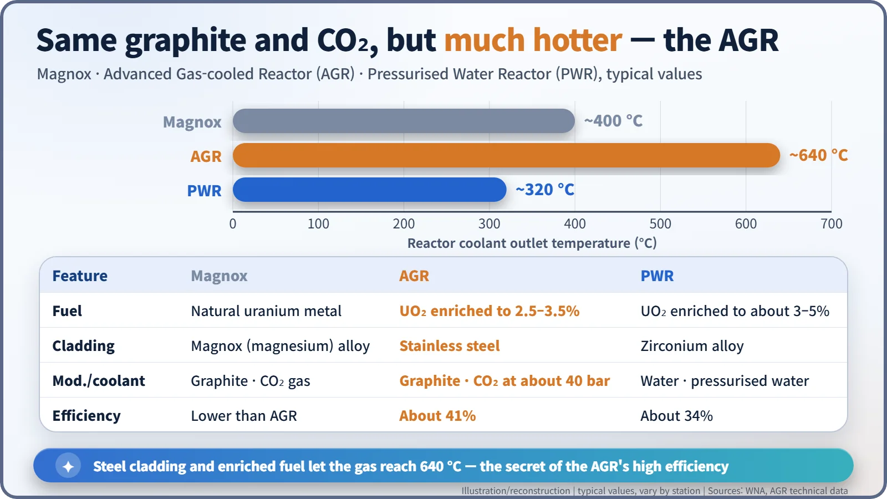
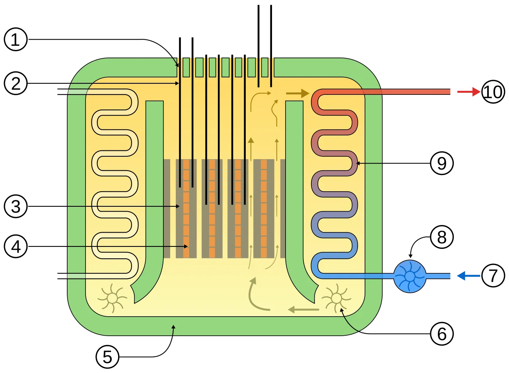
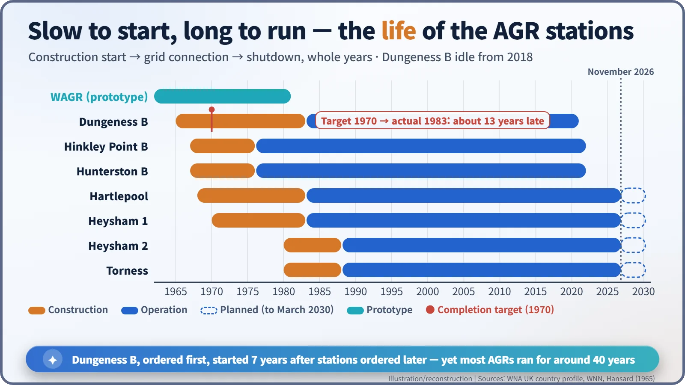
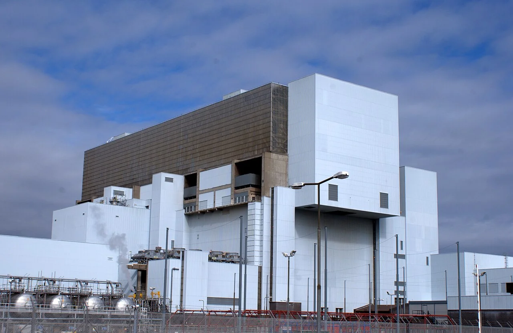

Nuclear History · 204
"We Have Hit the Jackpot" — Britain's Advanced Gas-cooled Reactor (AGR) and Its Thirteen-Year Wait
A minister promised the greatest break-through of all time; the AGR delivered 640 °C gas and 41% efficiency, but Dungeness B took until 1983 to start.
In May 1965 Britain's Minister of Power told Parliament that choosing the home-grown Advanced Gas-cooled Reactor (AGR) for Dungeness B meant "we have hit the jackpot". The AGR ran hotter and more efficiently than its Magnox parent, but the first station started generating 13 years late, and the design's record is still debated.
"The greatest break-through of all time"
"I am quite sure that we have hit the jackpot with this." London, 25 May 1965. In the House of Commons, the Minister of Power, Frederick Lee, announced which kind of reactor would be built at Dungeness B, a new nuclear station on the Kent coast. He went further still: "Here we have the greatest break-through of all time." The winner was a home-grown British design, the Advanced Gas-cooled Reactor (AGR). The target completion date was 1970. Dungeness B actually began generating electricity in 1983. [1] [7]
Same skeleton, hotter heart
Britain had entered the nuclear age with its Magnox reactors, which ran on natural (unenriched) uranium. Blocks of graphite slowed the neutrons down, and carbon dioxide (CO₂) gas carried the heat away. The weak point was the fuel can: the magnesium alloy that gave Magnox its name could not stand high temperatures. If you cannot heat the gas much, you cannot turn much of the heat into electricity.
The AGR kept the graphite and the CO₂ but rebuilt the fuel:
- Fuel: ceramic pellets of uranium dioxide (UO₂), enriched to 2.5–3.5% uranium-235.
- Cladding: stainless steel. Beryllium was considered first but was dropped because it was too brittle. Steel absorbs more neutrons than magnesium alloy, so the enrichment was raised to compensate.
- Coolant: CO₂ compressed to about 40 bar, which leaves the core at about 640 °C.
Water in a kettle stops at 100 °C and turns to steam; a gas can simply keep getting hotter. That let the AGR raise steam at temperatures similar to a coal-fired power station and reach a thermal efficiency of about 41%, compared with about 34% for a modern pressurised water reactor (PWR). From the same heat, it squeezed out more electricity. [2] [7]


A "golf ball" by the sea
The idea was first tested at Windscale in north-west England, in a prototype called WAGR. It was small, about 100 MW of heat and about 30 MW of electricity. It reached criticality in 1962 and was connected to the grid in 1963. Its spherical containment building earned it the nickname "the golf ball". WAGR ran until 1981 (some sources say 1983), producing about 3.26 million megawatt-hours over some 19 years of operation according to World Nuclear News. It then became Britain's national demonstration project for taking a power reactor apart. When the last campaign finished in 2011, it became the first power reactor in the UK to be fully decommissioned. [3]
Beating the light-water reactor — and then waiting
The 1965 choice came out of a real contest. The Central Electricity Generating Board (CEGB) had also invited tenders for "water-moderated reactor systems of proved designs" — the American-style light-water family. Lee told MPs that the AGR showed "clear economic and technical advantages", would generate base-load power more cheaply than a contemporary coal-fired station, and offered "something like a 10 per cent. advantage … and it could be greater." [1]
Reality was harder. Dungeness B ran into problems with nearly every aspect of its design and started generating in 1983, about 13 years late. Hinkley Point B and Hunterston B, ordered a year or two later, were running by 1976. Critics often point to the way orders were split among three design-and-build consortia: the stations shared a concept but differed in detail, so each needed its own safety case and scarce expert staff were spread thin. In the end, 14 reactors were built at seven stations; the last two, Heysham 2 and Torness, reached the grid in 1988. [2] [7]

A mixed report card
Opinions still differ. In a 1977 paper, "Two British Errors", the former Treasury economist David Henderson named the AGR programme, together with Concorde, as one of the two most costly British government-sponsored project errors. The World Nuclear Association (WNA) notes that most AGR units have run at significantly less than their original design output. [6] [2]
There is another side to the ledger. Hinkley Point B ran for about 46 years, from 1976 to 2022. The four remaining stations — Hartlepool, Heysham 1, Heysham 2 and Torness — are all expected to keep generating until March 2030, after EDF's latest extension decision in July 2026, although the exact dates depend on regular inspections. [5] [4]
What sets their lifespan is graphite. The stacked graphite bricks of the core cannot be replaced, and after decades of radiation and heat they slowly crack. Inspections at Hunterston B in 2018 found more cracking than predicted. Dungeness B, which had not generated since September 2018, was declared closed in June 2021; Hunterston B followed in 2021–2022 and Hinkley Point B in 2022. [2]

Jackpot or lesson?
The AGR achieved the high efficiency its designers wanted, but building each station differently was paid for in time and money. Britain's next nuclear station, Sizewell B, was a PWR. Whether 1965 really "hit the jackpot" depends on where you stand, but one lesson is clear: how you build matters as much as what you design.